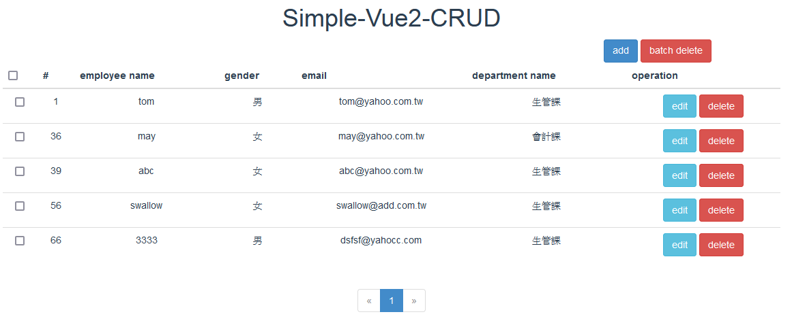
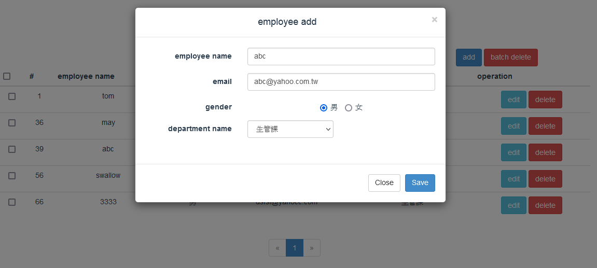
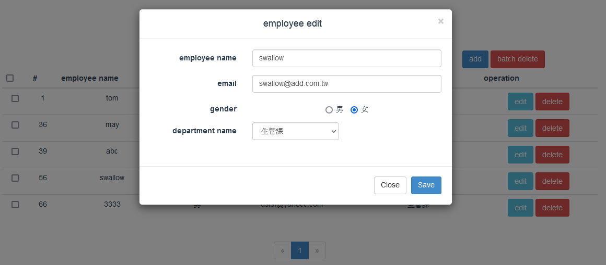
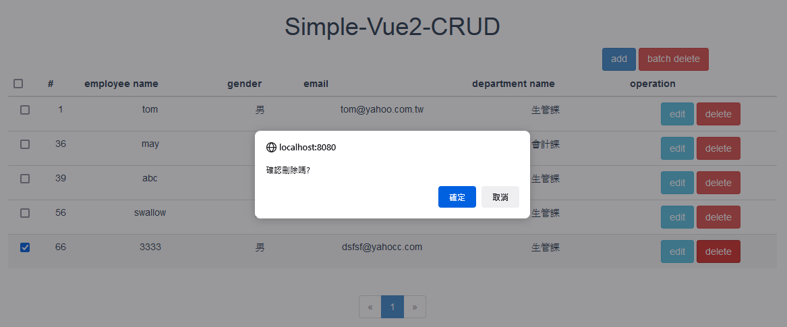
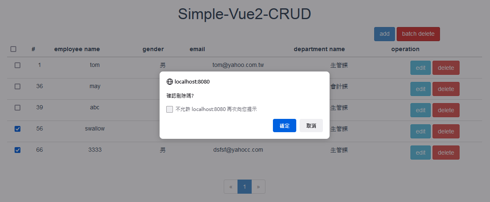

使用Vue2.x來開發一個員工管理系統。使用腳手架建立專案，採前後分離的方式，前端使用Vue，後端使用Springboot。
系統名稱 : Vue2.x CRUD
開發年分 : 2021年
開發工具 : WebStorm 2020.1.1
開發語言 : Vue
資料庫 : MySQL 5.7
運行環境 : Windows
- assets資料夾：存放靜態資源
- components資料夾：存放所有的元件
- router資料夾：設定路由
- utils資料夾：存放自定義的工具
- Vue 2.x
- Axios
- Boostrap 3.x
- 程式啟動顯示主界面，顯示所有員工資料
- 新增員工信息，點擊新增按鈕，將員工資料儲存到資料庫中。
- 選中某個員工，點擊修改按鈕，將員工資料儲存到資料庫中。
- 選中某個員工，點擊刪除按鈕，提示是否刪除
員工列表

員工新增

員工編輯

員工刪除

員工批次刪除
